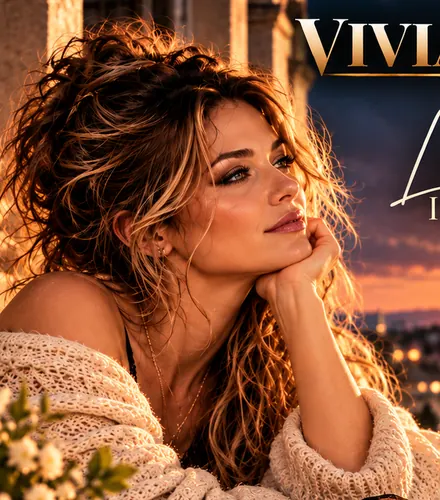
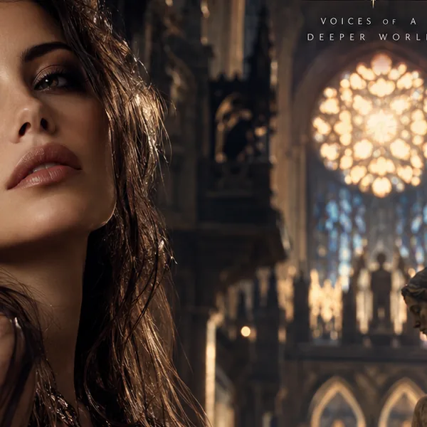
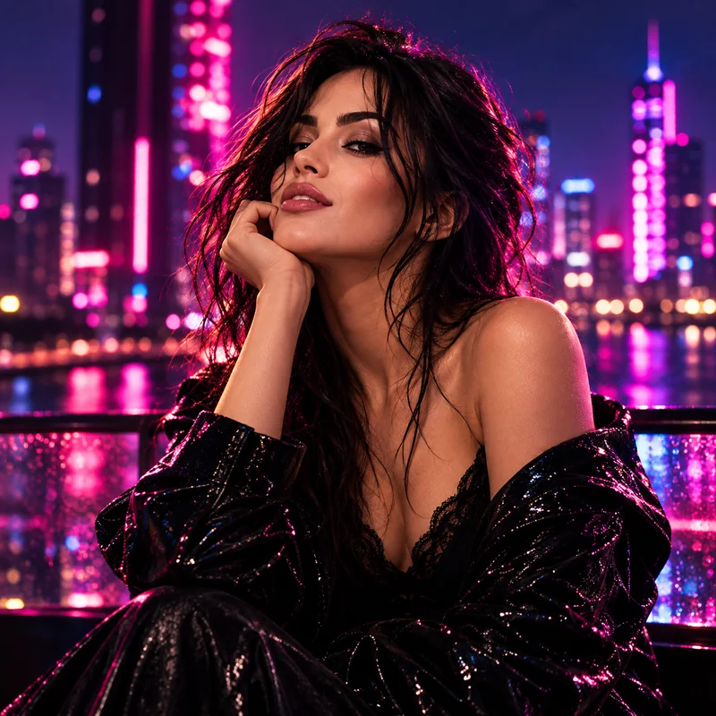
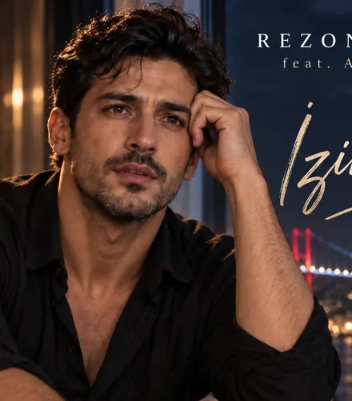
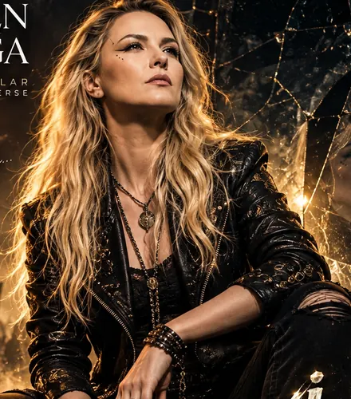
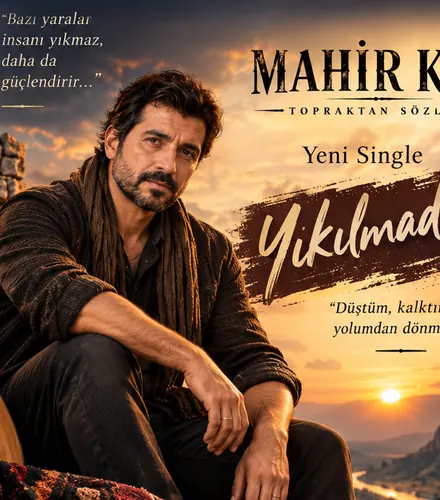

01
01SLOW / ARABESK
Hazan
Aşk, özlem ve hatıraların derin sesi.
9 ŞARKI · 9 SORU↗
On farklı müzikal kimlik, doksan ayrı şarkı. Bazen bir melodi, bazen bir tek kelime bizi en eski hatıramıza götürür. Sende karşılığı olan şarkıyı seç.
Her sanatçının dokuz şarkısı ve sana özel dokuz sorusu var. Bir sanatçıya dokun; şarkıları seç, soruları keşfet ve kendi anlatımını taslak olarak yaz.
01Aşk, özlem ve hatıraların derin sesi.
Mücadele, kayıp ve yeniden ayağa kalkış.

03Aşk, kırılganlık ve içsel dönüşüm.

04Fransızca şiirsellik ve sinematik anılar.
Dillerin ötesinde ritim ve duygular.

06Özgürlük, cesaret ve karanlık ışıklar.
 07
07Akdeniz'den sıcak anılar ve aşk.

08Enerji, umut ve yeniden başlangıçlar.

09Başkaldırı, özgürlük ve kendi sesin.

10Anadolu, emek, dostluk ve kökler.
Şimdilik bu bir deneyim ve taslak yazma alanı. Şarkı seçimi, hikâye gönderimi, oy ve yorum sayıları gerçek kullanıcı verileri olarak kaydedilmiyor. Kuralları okuma ve onay kutularını deneme işlevleri hazır; gönderim ise üyelik ve moderasyon sistemi açılınca etkinleşecek.
Bu sayfalar sanatsal repertuvar önizlemeleridir. Tüm parçaların bütün müzik platformlarında yayımlandığı anlamına gelmez. Gerçek etkileşim ve ödüllendirme aktif değildir.